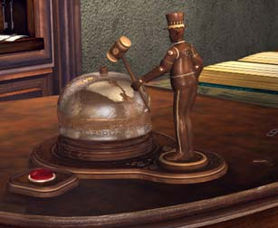
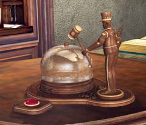
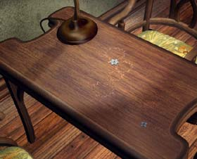
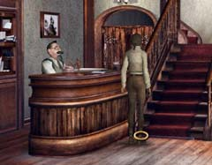

| 概要 | 地図 | |
| 淡いヒント集 | ヒント集 | 的確なヒント集 |
| 攻略最短ルート | Syberia 攻略へ |
|
ホテル

この人形の周りをよく調べると、かたわらに小さな鍵が置いてあるのに気づくはずだ。それを広い、人形の背中に差し込もう。

このように。 差し込んだら、鍵を回し人形のゼンマイを巻く。その後、赤いボタンを押してみよう。人形はベルをたたき、支配人がやってくるはずだ。

モモが出ていった後に机を調べてみよう。歯車があるはずだ。 ゲームの映像をよく見ると、モモは歯車を投げ出している。机の周りも調べて、全部で4つの歯車を必ず拾っておかなければならない。これは、教会のエレベーターを動かすのに必要なのだ。

ホテルで予約した部屋に入った後、オフィスに連絡しなければならなくなった。 自分で持っている携帯電話を使おう。オフィスから電話した後、すぐにオフィスからFAXが届くはずだ。支配人に尋ねれば、すぐに持ってきてくれる。 |
| 概要 | 地図 | |
| 淡いヒント集 | ヒント集 | 的確なヒント集 |
| 攻略最短ルート | Syberia 攻略へ |